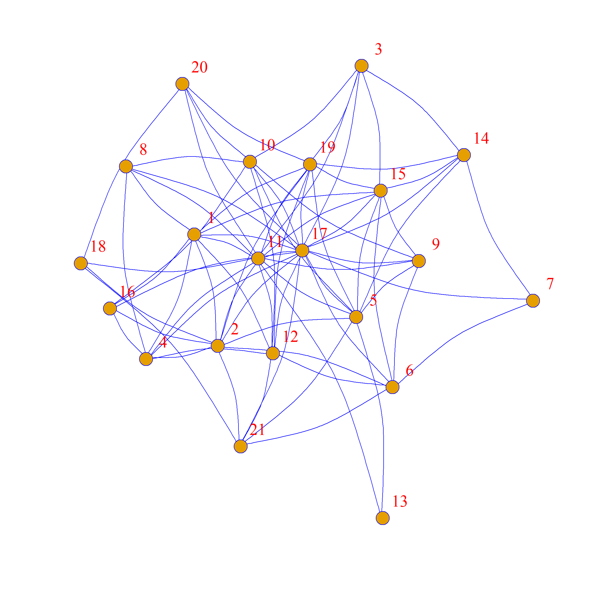

Statistical Models of Networks II
In this previous handout we saw how to do some basic, single-hypothesis testing against plausible null models. This approach can be thought of as conditioning on some set of graph level properties and seeing if something we compute in the graph obtains “net” of these conditioning (e.g., the observed degree distribution).
Conditioning, of course, can be thought of as the analogue of “controlling for” something in a standard linear regression model. This means that it is possible to extend the framework we explored to a setting in which we conditioning on multiple graph properties to see if what we measure obtains “net” of all these properties at th same time.
Exponential Random Graph Models
The framework of Exponential Random Graph Models (ERGMs) is useful for this purposes. There are many ways to think of ERGMs, one of them is as a network regression in which we are modeling the probability of observing each tie as a function of a bunch of tie level variables. Another way of thinking about it is as specifying a dependence structure that tell us how probability of observing a given tie depends on other things going on in the “neighborhood” of that tie, like whether one of the nodes incident to that edge is also incident to other edges (Pattison and Robins 2002).
Formally, this means that an Exponential Random Graph Model is a probabilistic (auto)“regression” model in which the network itself, considered as a random variable (\(\mathbf{Y}\)) is the main outcome and the specified patterns of local dependence are the main predictors:
\[ Pr(\mathbf{Y} = \mathbf{y}) = \frac{exp\left[\theta^T S(\mathbf{y})\right] h(\mathbf{y})}{\kappa(\theta)} \]
This means that the probability of observing a particular realization of the network (\(Pr(\mathbf{Y} = \mathbf{y})\)) is a function of a given set of local structural configurations defined on the same network (\(S(\mathbf{y})\)) with the parameter \(\theta\) specifying the form of the dependence (e.g., positive or negative) of that local structural factor.1
Note that if the we take the natural logarithm of the numerator above it leads to the usual additive linear model expression:
\[ log(exp\left[\theta^T S(\mathbf{y})\right]) = \theta_1s_1(y) + \theta_2s_2(y) + \theta_3s_3(y) + \ldots \theta_ps_p(y) \]
Where \(p\) is the number of terms included in the model. Each \(S_p\) is thus a network statistic specifying counts of specific configurations (e.g., dyads or triads of a certain type, or links beginning at a particular type of node). When \(\theta\) is positive, the existence of a given configuration enhances the probability of observing a link contained in it, while when it is negative \(\theta\) is positive, the same configuration depresses the respective probability.
The whole network, therefore, is seen as being generated by the entire ensemble of local structural mechanisms operating in tandem. This means that each ergm also specifies a probability distribution of graphs that are generated by the model’s parameters.
Fitting ERGMs
This is all very abstract, so let’s see how it works in practice. First, we need a package to estimate ERGMs. Thankfully, there is one, called (predictably) ergm (which is dependent on the package network):
Let’s bring back the friendship network from Krackhardt’s 21 high tech managers:
Note that we use the function asNetwork from the intergraph package to coerce the igraph object into something that the package ergm can work with (namely, a network object).
And, now, let’s fit an ergm!
Call:
ergm(formula = n ~ edges)
Maximum Likelihood Results:
Estimate Std. Error MCMC % z value Pr(>|z|)
edges -0.5057 0.1424 0 -3.55 0.000385 ***
---
Signif. codes: 0 '***' 0.001 '**' 0.01 '*' 0.05 '.' 0.1 ' ' 1
Null Deviance: 291.1 on 210 degrees of freedom
Residual Deviance: 278.1 on 209 degrees of freedom
AIC: 280.1 BIC: 283.5 (Smaller is better. MC Std. Err. = 0)The typical structure of an ergm call is modeled after the linear regression models R functions like lm or glm, with dependent variable followed by squiggly symbol followed by an additive list of independent variables of the form y ~ x.
The output which we can check out by using the function summary on the resulting object, is also pretty similar to the typical outputs of linear model functions in R. We have a table with the independent variable edges, followed by a coefficient estimate, and some kind of p-value against the null hypothesis that that estimate is zero. Which in this case we can reject pretty handily (\(Z = - 3.55\), \(p < 0.01\)).
What is edges? Well as we said before, the independent variables in ergm are just counts of stuff that’s going on in the network, to predict…the network!
In this case, edges fits the number of edges in the network, which means that it fits anything that is a function of this number, like the density (or the average degree).
In fact, the coefficient estimate of the edges parameters without any other network covariates is the density.
We can check this as follows, let’s transform the coefficient estimate from the logit to the probability scale:
This probability estimate is the same as:
That is, the expected probability of an edge existing between two randomly chosen nodes in the network, which is the same as the observed density.
If you like regression analogies, fitting an ergm including only the edges parameter and nothing else is equivalent to fitting a linear regression model with only an intercept (which returns the expected value—a.k.a., the mean—of the dependent variable).
As we noted, an ergm model is a model of the network that conditions on the things we put on the right-hand side of the equation, in this case, we conditioned on the density (number of edges), which means that this is an Erdos-Renyi random graph model for the observed network, like the ones we simulated using edge-swapping.
This also means that we can simulate a bunch of networks that condition on the fit of a given ergm. For this we use the function simulate:

Note that the simulated networks are a graph ensemble of networks drawn from a probability distribution in which the expected (mean) density is equivalent to the observed density.
We can check by looking at the densities of the separate networks:
[1] 0.35 0.38 0.35 0.38 0.34 0.36 0.33 0.37 0.35 0.32 0.44 0.36 0.40 0.42 0.37
[16] 0.39 0.39 0.46 0.37 0.36 0.33 0.37 0.40 0.36 0.40 0.42 0.40 0.39 0.36 0.35
[31] 0.36 0.37 0.38 0.45 0.36 0.41 0.34 0.39 0.36 0.38 0.38 0.35 0.34 0.38 0.36
[46] 0.38 0.34 0.43 0.38 0.40 0.37 0.43 0.34 0.37 0.34 0.39 0.40 0.40 0.39 0.49
[61] 0.32 0.38 0.41 0.43 0.40 0.40 0.33 0.32 0.38 0.37 0.35 0.41 0.44 0.42 0.39
[76] 0.38 0.38 0.40 0.38 0.38 0.36 0.37 0.38 0.35 0.37 0.37 0.40 0.43 0.42 0.43
[91] 0.31 0.37 0.38 0.35 0.39 0.34 0.34 0.42 0.35 0.35Some of the values are larger and some of them are lower, but they all revolve around the estimate:
If we take larger and larger graph ensembles the distribution of densities would become bell-shaped and the average of the ensemble would converge around the density of the observed network.
So a useful way to think about ergms is as models that fix expected graph statistics in a given ensemble. The values of the expectations are provided by the coefficients obtained in the model for that statistic, and the range of possible variation around those expectations are given by the standard error of the estimate.
Fitting a Real ERGM
Of course, nobody uses the ergm package to fit single parameter Erdo-Renyi random graph models. The point is to test multivariate hypotheses of the type: Is the value of a given network effect (e.g., homophily) I observe larger or smaller than we would expect in a network with these other characteristics?
So let’s recreate our original analysis of homophily (assortativity) by managerial level from our previous analysis:
Call:
ergm(formula = n ~ edges + nodematch("level"))
Maximum Likelihood Results:
Estimate Std. Error MCMC % z value Pr(>|z|)
edges -1.0361 0.2481 0 -4.175 < 1e-04 ***
nodematch.level 0.8450 0.3060 0 2.762 0.00575 **
---
Signif. codes: 0 '***' 0.001 '**' 0.01 '*' 0.05 '.' 0.1 ' ' 1
Null Deviance: 291.1 on 210 degrees of freedom
Residual Deviance: 270.1 on 208 degrees of freedom
AIC: 274.1 BIC: 280.8 (Smaller is better. MC Std. Err. = 0)Here we fit a nodematch term with the value of the node-characteristic “level.” This term fixes the expected number of dyads that match on this attribute to equal that observed in the network. That is, it adds a “dummy” (change score) indicator if a dyad matches on this attribute.
The results tell us that, net of density, there is higher likelihood of observing ties that match on this attribute (\(\theta = 0.86, p <0.01\)).
If we wanted to put a percentage, on this estimate, we could exponentiate:
Which tells us that there is more than 2 to 1 odds of observing connected dyads that match on level than not.
Activity Differences Based on a Categorical Factor
As we noted before, it could be that people with some values of the level variable are just more likely to form ties (e.g., the mean degree of nodes varies across the value of levels), so before we conclude that there is a lot of homophily going on, we may want to condition on the expected probability of a node with a given value of the level variable to show up at either end of an edge. We can do that like this:
Call:
ergm(formula = n ~ edges + nodefactor("level", base = 2) + nodematch("level"))
Maximum Likelihood Results:
Estimate Std. Error MCMC % z value Pr(>|z|)
edges -0.7035 0.4879 0 -1.442 0.1493
nodefactor.level.1 -0.9055 0.6891 0 -1.314 0.1888
nodefactor.level.3 -0.1587 0.4039 0 -0.393 0.6944
nodematch.level 0.8147 0.4902 0 1.662 0.0965 .
---
Signif. codes: 0 '***' 0.001 '**' 0.01 '*' 0.05 '.' 0.1 ' ' 1
Null Deviance: 291.1 on 210 degrees of freedom
Residual Deviance: 268.1 on 206 degrees of freedom
AIC: 276.1 BIC: 289.5 (Smaller is better. MC Std. Err. = 0)The ergm term nodefactor uses dummy coding for the levels of a given categorical variable and fits \(k-1\) terms for mean differences in degree for each category with a category serving as the (omitted) comparison. In this case, we indicate that using the base argument, which set the second level category as the reference.
As we can see, after adjusting for mean differences in degree across levels the assortativity estimate for the nodematch term is no longer significant at conventional levels \(p = 0.10\), indicating that heterogeneity in connectivity by nodes at different levels partially accounts for this effect (although model fit estimate prefer the more parsimonious model without nodefactor level effects).
Considering Multiple Homophily Effects
Of course, what makes ergms such a flexible modeling system is that we can fit multiple homophily terms at once. In fact, the list of “covariates” can be as long as you want, with the caveat that the more stuff you condition on, the more restricted (and perhaps nonsensical) is the space of graphs that you are presuming your actual data came from.
Regardless, here’s a model with multiple homophily effects, one for levels and the other for “Department”:
Call:
ergm(formula = n ~ edges + nodematch("level") + nodematch("dept"))
Maximum Likelihood Results:
Estimate Std. Error MCMC % z value Pr(>|z|)
edges -1.2682 0.2679 0 -4.734 < 1e-04 ***
nodematch.level 0.8217 0.3127 0 2.628 0.00859 **
nodematch.dept 1.0345 0.3458 0 2.991 0.00278 **
---
Signif. codes: 0 '***' 0.001 '**' 0.01 '*' 0.05 '.' 0.1 ' ' 1
Null Deviance: 291.1 on 210 degrees of freedom
Residual Deviance: 261.0 on 207 degrees of freedom
AIC: 267 BIC: 277.1 (Smaller is better. MC Std. Err. = 0)Which reveals strong homophily effects for each node-level factor “net” of the other one, suggesting that our graph is likely to have come from a world in which nodes form ties selectively based on both these criteria.
Homophily on a Continuous Attribute
Some node attributes like “age” and “tenure” in the Krackhardt’s High-Tech Managers data are continuous. Obviously, we couldn’t condition on matching on each level of a continuous attribute.
In the ergm framework homophily on a continuous attribute is handled using the absdiff term, which computes the absolute difference in the value of the attribute between the two nodes incident to the edge:
Call:
ergm(formula = n ~ edges + nodematch("level") + nodematch("dept") +
absdiff("age"))
Maximum Likelihood Results:
Estimate Std. Error MCMC % z value Pr(>|z|)
edges -0.89316 0.31550 0 -2.831 0.00464 **
nodematch.level 0.85287 0.31692 0 2.691 0.00712 **
nodematch.dept 1.06643 0.35049 0 3.043 0.00234 **
absdiff.age -0.03972 0.01850 0 -2.147 0.03180 *
---
Signif. codes: 0 '***' 0.001 '**' 0.01 '*' 0.05 '.' 0.1 ' ' 1
Null Deviance: 291.1 on 210 degrees of freedom
Residual Deviance: 256.2 on 206 degrees of freedom
AIC: 264.2 BIC: 277.6 (Smaller is better. MC Std. Err. = 0)Which tells us that there is indeed age homophily in this network \(\theta_{agediff} = -0.04, p < 0.05\). Note that here a negative effect indicates a smaller age difference in the tie, which indicates homophily. A positive effect in the absdiff term would indicate heterophily on the continuous attribute.
Activity Differences Based on a Continuous Factor
Of course, just like before, we may want to check that we are not mistaking homophily, with the tendency of people in certain age groups to form more ties in general (e.g., an age/degree correlation in the network).
To fit the analogue of nodefactor for continuous attributes we use nodecov, which conditions on the sum of the values a given attribute for the two nodes incident to the edge:
m6 <- ergm(n ~ edges
+ nodecov("age") + nodematch("level")
+ nodematch("dept") + absdiff("age")
)
summary(m6)Call:
ergm(formula = n ~ edges + nodecov("age") + nodematch("level") +
nodematch("dept") + absdiff("age"))
Maximum Likelihood Results:
Estimate Std. Error MCMC % z value Pr(>|z|)
edges -0.10503 1.11891 0 -0.094 0.92521
nodecov.age -0.01104 0.01511 0 -0.731 0.46496
nodematch.level 0.81527 0.32107 0 2.539 0.01111 *
nodematch.dept 1.07818 0.35134 0 3.069 0.00215 **
absdiff.age -0.02951 0.02312 0 -1.276 0.20181
---
Signif. codes: 0 '***' 0.001 '**' 0.01 '*' 0.05 '.' 0.1 ' ' 1
Null Deviance: 291.1 on 210 degrees of freedom
Residual Deviance: 255.6 on 205 degrees of freedom
AIC: 265.6 BIC: 282.4 (Smaller is better. MC Std. Err. = 0)Like before, after adjusting for the age/degree correlation, there does not seem to be a statistically significant age homophily effect (\(p = 0.20\)).
Finally, here’s a model including homophily effects for all four node attributes (two categorical and two continuous) in the Krackhardt High-Tech Managers data:
m7 <- ergm(n ~ edges
+ nodecov("age") + nodecov("tenure")
+ nodematch("level") + nodematch("dept")
+ absdiff("age") + absdiff("tenure")
)
summary(m7)Call:
ergm(formula = n ~ edges + nodecov("age") + nodecov("tenure") +
nodematch("level") + nodematch("dept") + absdiff("age") +
absdiff("tenure"))
Maximum Likelihood Results:
Estimate Std. Error MCMC % z value Pr(>|z|)
edges 0.39296 1.21536 0 0.323 0.746444
nodecov.age -0.04671 0.01858 0 -2.514 0.011954 *
nodecov.tenure 0.07830 0.02116 0 3.701 0.000215 ***
nodematch.level 1.25596 0.35743 0 3.514 0.000442 ***
nodematch.dept 1.63590 0.41072 0 3.983 < 1e-04 ***
absdiff.age -0.03375 0.02681 0 -1.259 0.208042
absdiff.tenure 0.01060 0.02936 0 0.361 0.718209
---
Signif. codes: 0 '***' 0.001 '**' 0.01 '*' 0.05 '.' 0.1 ' ' 1
Null Deviance: 291.1 on 210 degrees of freedom
Residual Deviance: 236.4 on 203 degrees of freedom
AIC: 250.4 BIC: 273.9 (Smaller is better. MC Std. Err. = 0)Note that this model also conditions on the degree correlation between tenure at the firm and degree. As we can see, the categorical homophily effects due to level and department remain strong, however, there is no evidence for homophily effects based on age and tenure.
Instead, the continuous attributes are correlated with degree, with ties featuring younger people being more likely to be observed (negative age effect on the nodecov term) and ties featuring people with longer tenure (positive tenure effect on the nodecov term) also being more likely to be observed. It makes sense to condition on both age and tenure at the same time, since these are strongly correlated at the individual level (\(r=\) 0.48)
Heterogeneous Homophily Effects
Note that nodematch fits a single term for the homophily on a categorical attribute. For an attribute with just two categories this may not be a problem, since we are just comparing “same” connected dyads to “different” connected dyads.
But consider an attribute like “department” in these data, which has four levels. Fitting a single term means we are constraining the homophily effect to be the same regardless of the levels at which the nodes match. So the effect for 4-4 nodes is the same as the effect for 3-3 nodes, which is the same as the effect for 2-2 nodes and so forth.
We can of course relax this homogeneity restriction and specify separate nodematch effects by levels of the categorical attribute:
m8 <- ergm(n ~ edges
+ nodecov("age") + nodecov("tenure")
+ nodematch("level", levels = c(2, 3))
+ nodematch("dept", diff = TRUE, levels = c(2, 3, 4))
+ absdiff("age") + absdiff("tenure")
)
summary(m8)Call:
ergm(formula = n ~ edges + nodecov("age") + nodecov("tenure") +
nodematch("level", levels = c(2, 3)) + nodematch("dept",
diff = TRUE, levels = c(2, 3, 4)) + absdiff("age") + absdiff("tenure"))
Maximum Likelihood Results:
Estimate Std. Error MCMC % z value Pr(>|z|)
edges 1.03210 1.26058 0 0.819 0.412928
nodecov.age -0.05374 0.02055 0 -2.616 0.008909 **
nodecov.tenure 0.07958 0.02327 0 3.420 0.000627 ***
nodematch.level 1.15303 0.34606 0 3.332 0.000863 ***
nodematch.dept.1 1.26854 0.74658 0 1.699 0.089294 .
nodematch.dept.2 1.55826 0.56209 0 2.772 0.005566 **
nodematch.dept.3 -0.34708 1.33313 0 -0.260 0.794592
absdiff.age -0.03089 0.02671 0 -1.157 0.247476
absdiff.tenure 0.01397 0.02941 0 0.475 0.634642
---
Signif. codes: 0 '***' 0.001 '**' 0.01 '*' 0.05 '.' 0.1 ' ' 1
Null Deviance: 291.1 on 210 degrees of freedom
Residual Deviance: 242.7 on 201 degrees of freedom
AIC: 260.7 BIC: 290.8 (Smaller is better. MC Std. Err. = 0)Here we are using connected dyads that match at department = 1 in the data (there’s one node that is coded at zero on this variable, so there cannot be dyads that match at this value) as the reference by specifying the levels argument. We specify we want heterogeneous homophily effects by department by setting the diff argument inside the nodematch term to TRUE (it is FALSE by default).
As we can see, we can observe heterogeneous homophily effects on the department attribute in these data. Connected dyads matching on department at levels 2 and 3 are responsible for most of the positive homophily effects. For dyads that match at level 4 of department, there is no homophily (\(\theta_{dept4-4} = - 0.35, p = 0.80\)).
Looking at combinations of ties featuring an attribute
In the preceding we looked at terms that condition on homophily or the probability that a given edge in a network drawn at random would feature nodes that match on a given attribute. Sometimes, we may be interested in looking at terms that condition on both matching and not-matching. For this task, we use the ergm term nodemix.
Let’s look at an example. But first let’s switch to a different data set, this time the friendship nomination network from Lazega’s Law Firm data:
And now let’s fit an ergm that conditions on homophily and activity effects for four individual level covariates: gender, partner status, age, seniority.
m9 <- ergm(n ~ edges +
+ nodecov("age") + nodecov("seniority")
+ nodefactor("status") + nodefactor("gender")
+ nodematch("status") + nodematch("gender")
+ absdiff("age") + absdiff("seniority")
)
summary(m9)Call:
ergm(formula = n ~ edges + +nodecov("age") + nodecov("seniority") +
nodefactor("status") + nodefactor("gender") + nodematch("status") +
nodematch("gender") + absdiff("age") + absdiff("seniority"))
Maximum Likelihood Results:
Estimate Std. Error MCMC % z value Pr(>|z|)
edges -0.851155 0.524376 0 -1.623 0.104551
nodecov.age -0.008933 0.007078 0 -1.262 0.206900
nodecov.seniority 0.017056 0.008958 0 1.904 0.056905 .
nodefactor.status.2 -0.406772 0.118871 0 -3.422 0.000622 ***
nodefactor.gender.2 0.193677 0.115764 0 1.673 0.094320 .
nodematch.status 0.799008 0.147556 0 5.415 < 1e-04 ***
nodematch.gender 0.389504 0.149017 0 2.614 0.008953 **
absdiff.age -0.030883 0.010068 0 -3.068 0.002158 **
absdiff.seniority -0.067122 0.012294 0 -5.460 < 1e-04 ***
---
Signif. codes: 0 '***' 0.001 '**' 0.01 '*' 0.05 '.' 0.1 ' ' 1
Null Deviance: 3445 on 2485 degrees of freedom
Residual Deviance: 1928 on 2476 degrees of freedom
AIC: 1946 BIC: 1999 (Smaller is better. MC Std. Err. = 0)We can see that there are not statistically significant activity effects based on attribute, except for the one premised on status in the firm (although both the positive seniority and gender effects are significant at the \(p <0.10\) level. We can also observe predicted homophily effects based on all four characteristics. This looks like a well-fitting useful baseline model.
Let’s now add additional activity and homophily effects law_school. This variable is coded into three categories: (1) Harvard/Yale, (2) Uconn, (3) “Other”:
m10 <- ergm(n ~ edges +
+ nodecov("age") + nodecov("seniority")
+ nodefactor("status") + nodefactor("gender")
+ nodefactor("law_school", base = 3)
+ nodematch("status") + nodematch("gender")
+ absdiff("age") + absdiff("seniority")
+ nodematch("law_school")
)
summary(m10)Call:
ergm(formula = n ~ edges + +nodecov("age") + nodecov("seniority") +
nodefactor("status") + nodefactor("gender") + nodefactor("law_school",
base = 3) + nodematch("status") + nodematch("gender") + absdiff("age") +
absdiff("seniority") + nodematch("law_school"))
Maximum Likelihood Results:
Estimate Std. Error MCMC % z value Pr(>|z|)
edges -1.275735 0.550528 0 -2.317 0.020488 *
nodecov.age -0.006860 0.007370 0 -0.931 0.351919
nodecov.seniority 0.015054 0.009091 0 1.656 0.097734 .
nodefactor.status.2 -0.429909 0.120257 0 -3.575 0.000350 ***
nodefactor.gender.2 0.134855 0.118160 0 1.141 0.253747
nodefactor.law_school.1 0.091510 0.128525 0 0.712 0.476464
nodefactor.law_school.2 0.319710 0.094629 0 3.379 0.000729 ***
nodematch.status 0.802762 0.148891 0 5.392 < 1e-04 ***
nodematch.gender 0.383468 0.149576 0 2.564 0.010356 *
absdiff.age -0.030985 0.010123 0 -3.061 0.002207 **
absdiff.seniority -0.066486 0.012437 0 -5.346 < 1e-04 ***
nodematch.law_school 0.109033 0.122245 0 0.892 0.372436
---
Signif. codes: 0 '***' 0.001 '**' 0.01 '*' 0.05 '.' 0.1 ' ' 1
Null Deviance: 3445 on 2485 degrees of freedom
Residual Deviance: 1915 on 2473 degrees of freedom
AIC: 1939 BIC: 2009 (Smaller is better. MC Std. Err. = 0)This model shows that Uconn graduates are more popular in the friendship network (they form more ties), compared to graduates from “other” schools, but that there doesn’t seem to be homophily based on this factor.
Homophily via Combination of Attributes
Sometimes we may suspect that homophily happens via a combination of attributes (e.g., gender and status). We can specify such effects using the nodemix term as follows:
m11 <- ergm(n ~ edges +
+ nodecov("age") + nodecov("seniority")
+ nodefactor("status") + nodefactor("gender")
+ nodefactor("law_school", base = 3)
+ absdiff("age") + absdiff("seniority")
+ nodematch("law_school")
+ nodemix(c("gender", "status"), levels = TRUE, levels2 = c(1:6))
)
summary(m11)Call:
ergm(formula = n ~ edges + +nodecov("age") + nodecov("seniority") +
nodefactor("status") + nodefactor("gender") + nodefactor("law_school",
base = 3) + absdiff("age") + absdiff("seniority") + nodematch("law_school") +
nodemix(c("gender", "status"), levels = TRUE, levels2 = c(1:6)))
Maximum Likelihood Results:
Estimate Std. Error MCMC % z value Pr(>|z|)
edges -2.225120 0.715918 0 -3.108 0.001883 **
nodecov.age -0.006030 0.007508 0 -0.803 0.421886
nodecov.seniority 0.017111 0.009211 0 1.858 0.063210 .
nodefactor.status.2 0.132407 0.239020 0 0.554 0.579607
nodefactor.gender.2 0.554151 0.238303 0 2.325 0.020050 *
nodefactor.law_school.1 0.080613 0.128892 0 0.625 0.531689
nodefactor.law_school.2 0.326575 0.095087 0 3.434 0.000594 ***
absdiff.age -0.029508 0.010222 0 -2.887 0.003891 **
absdiff.seniority -0.069504 0.012543 0 -5.541 < 1e-04 ***
nodematch.law_school 0.110916 0.122475 0 0.906 0.365138
mix.gender.status.1.1.1.1 1.940435 0.472391 0 4.108 < 1e-04 ***
mix.gender.status.1.1.1.2 0.645250 0.358610 0 1.799 0.071970 .
mix.gender.status.1.2.1.2 1.134592 0.380036 0 2.985 0.002831 **
mix.gender.status.1.1.2.1 1.462671 0.443169 0 3.300 0.000965 ***
mix.gender.status.1.2.2.1 -0.869626 0.622416 0 -1.397 0.162360
mix.gender.status.2.1.2.1 2.127482 1.314879 0 1.618 0.105661
---
Signif. codes: 0 '***' 0.001 '**' 0.01 '*' 0.05 '.' 0.1 ' ' 1
Null Deviance: 3445 on 2485 degrees of freedom
Residual Deviance: 1908 on 2469 degrees of freedom
AIC: 1940 BIC: 2033 (Smaller is better. MC Std. Err. = 0)Here we use low status homogeneous dyads (regardless of gender mix) as the comparison category. The results show that compared to those dyads, high-status homogeneous, all men dyads are more prevalent, as gender-mixed dyads where the man is higher status. We also find a preponderance of all-men, status heterogeneous dyads.
Checking for Model Fit
In ergms we can always check for model fit using standard statistics they share with general linear models, like the model deviance, BIC, AIC and so forth. These are particularly useful when trying to decide between nested models.
However, we can also use the fact that each ergm specifies a probability distribution across a graph ensemble consistent with the estimated parameters to see whether the specification we decided on actually produces graphs with global (network level) characteristics that fall within a plausible range.
That is, even though network level factors are not directly specified in the model, a good model should be able to reproduce them via the local tie generating processes we specified.
When an ergm specification does not do this, and instead produces graphs within a narrow or weird range of values—e.g., for basic network statistics like the degree distribution, the geodesic distance distribution, or basic counts of key motifs like triangles and number of shared partners (a technical issue known as “degeneracy” in the ergm framework)—then that is a signal we need to change something in our specification.
In the ergm package we can check for goodness of fit based on the ability to match global network characteristics using the gof function. The function takes a ergm model object as input along with an optional argument called GOF specifying what simulated global network property across the implied graph ensemble we want to compare to our observed values. The main ones include the degree distribution, the distribution of edge-wise shared partners (common neighbors of connected dyads), and the geodesic distance distribution (number of dyads separated by shortest parths of a given length).
Let’s use m8 above which was the attribute-driven model with heterogeneous homophily effects for department we fit to the Krackhardt High Tech Managers data. Let’s say, we wanted to see whether our model was successful in reproducing the distribution of activity (degree) across nodes. In that case, we would type:
Here we asked gof to create a graph ensemble of one hundred graphs (the default) and look at the degree distribution in each, recording how many times a node with a given degree is observed in each graph.
To see the result we can check out the following object:
obs min mean max MC p-value
degree0 0 0 0.08 1 1.00
degree1 0 0 0.36 3 1.00
degree2 1 0 0.45 2 0.78
degree3 1 0 1.03 4 1.00
degree4 1 0 1.32 5 1.00
degree5 3 0 1.93 5 0.68
degree6 4 0 2.37 8 0.44
degree7 2 0 2.68 7 1.00
degree8 2 0 2.71 8 1.00
degree9 2 0 2.66 8 1.00
degree10 3 0 1.97 6 0.56
degree11 0 0 1.60 5 0.46
degree12 0 0 1.05 4 0.64
degree13 0 0 0.48 3 1.00
degree14 1 0 0.18 1 0.36
degree15 0 0 0.09 2 1.00
degree16 0 0 0.03 1 1.00
degree17 0 0 0.01 1 1.00
degree18 1 0 0.00 0 0.00
degree19 0 0 0.00 0 1.00
degree20 0 0 0.00 0 1.00The way to read the table is as follows: Under the column “obs” is the values of degree in the data (observed), then the other columns contain the range (min and max) and the mean of the each value of degree in the graph ensemble implied by the model.
The p-value is a test that the observed value is significantly different from the mean of the graph ensemble. Note that in a good fitting model, the mean of the ensemble implied by the model so we want \(p > 0.05\) for each row in the table as this indicates a good fitting model. We can see that this is indeed the case for every value except the last outlier one (\(k = 18\)), the simulations show this never happening (max = 0), so it is outside of the range of the observed value of one (\(p = 0.00\)).
Overall, however, the model does a good job of reproducing a distribution of degrees in the ensemble consistent with the observed data. If we wanted to see it in a plot, we would just type:
In this box plot, the ensemble mean is the blue diamond, the gray box is the interquartile (25th to 75th percentile) range, the black horizontal line in the gray box is the ensemble median, and the black connected line plot is the observed values.
What we would like to see in a well-fitting model is a black line that goes through the gray box and is not outside them, which is generally the case here for most of the observed range except for the very large values.
References
Footnotes
The denominator (\(\kappa(\theta)\)) is a normalizing constant required for the expression to result in a proper probability distribution and thus is of no substantive significance.↩︎